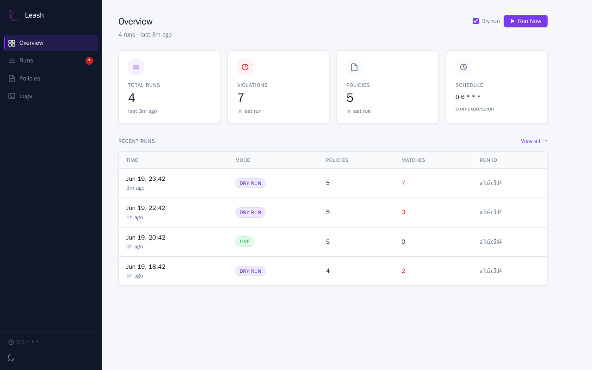
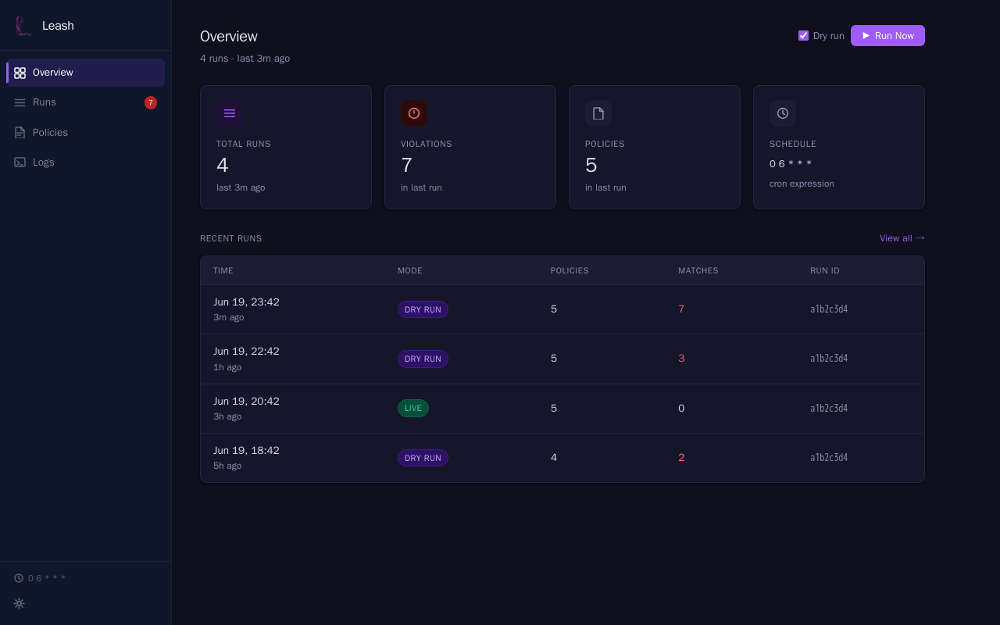
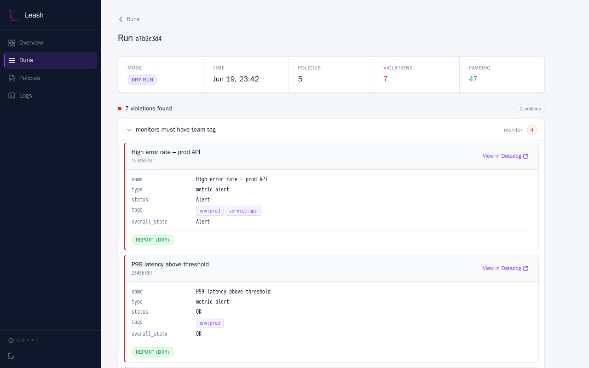
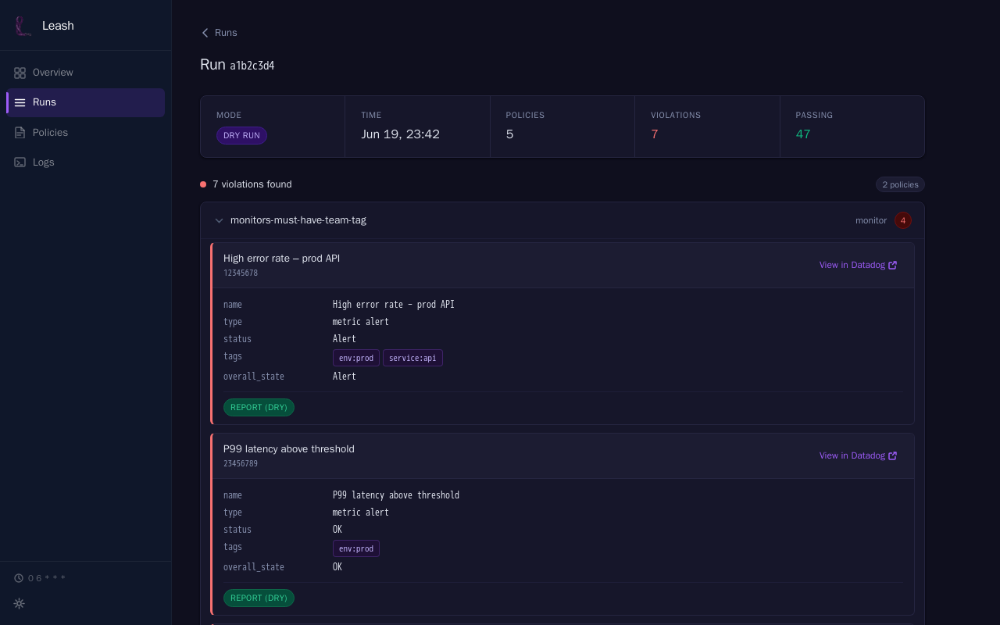
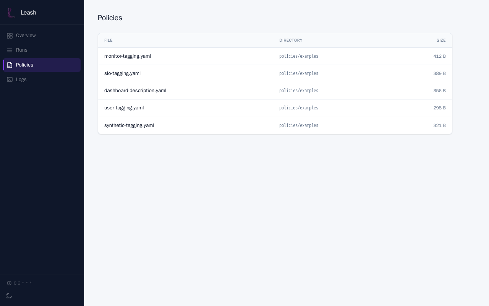
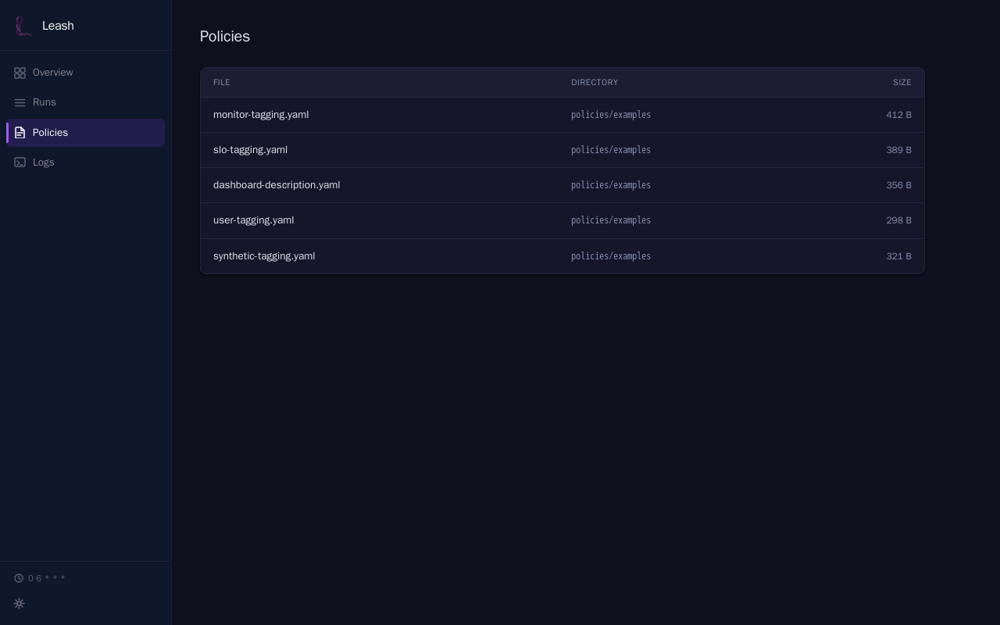
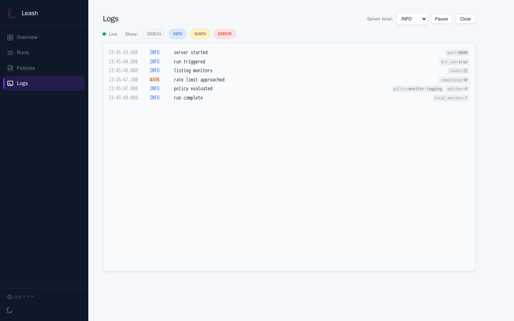
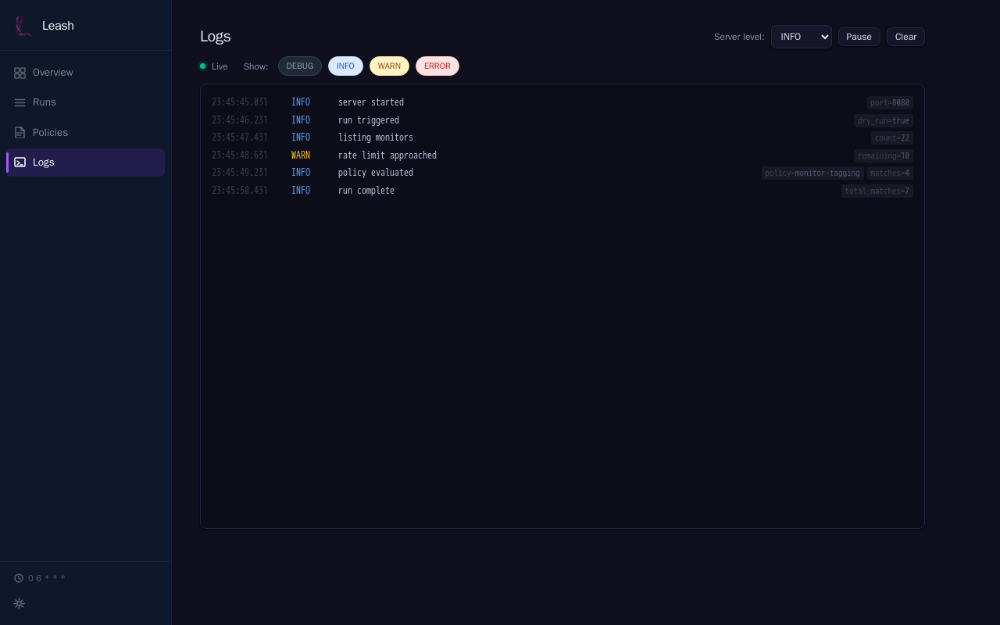

Governance-as-code for Datadog
Keep your Datadog org on a leash.
Define policies in YAML. Leash scans your monitors, SLOs, dashboards, synthetics, and more — and reports or remediates anything that drifts out of line.
docker pull ghcr.io/mbaitelman/leash:latest
policies:
- name: prod-monitors-must-have-team-tag
description: Every production monitor
needs an owning team.
resource: datadog.monitor
filters:
- type: tag
key: env
value: prod
op: present
- type: tag
key: team
op: absent
actions:
- type: report
- type: notify
channel: slackHow it works
Write it down. Run it. Let the findings flow.
A policy names a resource type, filters that select matching resources, and actions to take on each match. Everything else — pagination, auth, retries — is Leash's problem.
Write a policy
Declare what "good" looks like in plain YAML. Validate it in CI without touching the Datadog API.
$ leash validate --policy ./policies/
✓ 5 policies OKRun it
Leash queries the Datadog API, applies your filters, and executes actions on every match.
$ leash run --policy ./policies/
3 matches · dry run · 0 mutationsAct on findings
Runs emit a structured JSON findings report — stable, diffable, and ready for dashboards or alerting pipelines.
{ "policy_name": "prod-monitors…",
"match_count": 3, …}The policy language
Small vocabulary, sharp expressions.
Filters are AND-ed by default and composable with boolean logic. Actions run in order on every match.
Value filters
Compare any field with dot-notation — creator.email, options.thresholds.critical — using 14 operators from eq to regex to in.
Tag & age filters
First-class helpers for Datadog tag arrays (present, absent, eq) and time-based rules like modified older-than 90d.
Boolean logic
Nest and, or, and not meta-filters to express exactly the population you care about.
Report & notify
Print matches as structured findings, or POST them to Slack — per-policy webhooks with an env-var fallback.
Tag & remediate
Stamp violations with tags like compliance:violation — and auto-remove them once a resource passes again with remove_on_pass.
Guarded deletes
Destructive actions need two explicit opt-ins: confirm: true in the YAML and --dry-run=false on the CLI.
Coverage
Seven resource types, one grammar.
Every resource exposes its fields to the same filters — and adding a new type is one self-registering Go file, with no engine or CLI changes.
datadog.monitorMetric, log, APM, and composite monitorsdatadog.sloService Level Objectivesdatadog.syntheticSynthetic API and browser testsdatadog.dashboardDashboardsdatadog.userUser and service accountsdatadog.rum_applicationRUM applicationsdatadog.rum_retention_filterRUM retention filters, per appdatadog.*Yours next — see Extending LeashSafety model
Loud about findings, careful about changes.
-
Every run is a dry run by defaultMutating actions are logged, not executed, until you pass
--dry-run=false. -
Validate without credentials
leash validateparses and checks policies offline — perfect as a CI gate on policy PRs. -
Schema for your editor
leash schemaemits a JSON Schema so policy YAML gets completion and validation as you type. -
Auditable outputFindings reports record every action taken — resource, action type, dry-run flag, success.
{
"run_id": "a3f2c1d4-…",
"dry_run": true,
"policies": [{
"policy_name": "prod-monitors-must-have-team-tag",
"resource": "datadog.monitor",
"match_count": 3,
"matches": [{
"id": "12345678",
"properties": { "name": "High error rate", … }
}],
"actions_taken": [{
"action_type": "report",
"dry_run": true,
"success": true
}]
}]
}Web UI
A control room, when you want one.
leash serve starts a local web UI for running policies, browsing results, and editing policy files — with live log streaming, cron-scheduled runs, and dark mode. The screenshots below follow this page's theme.








The UI ships with no built-in authentication — keep it on 127.0.0.1 or behind an authenticating reverse proxy. Details in the README.
Quick start
Two commands to your first findings.
Set DD_API_KEY and DD_APP_KEY in your environment, point Leash at a policies directory, and run. Key setup guide →
Docker recommended
# Validate policies
$ docker run --rm --env-file .env \
-v $(pwd)/policies:/policies:ro \
ghcr.io/mbaitelman/leash:latest \
validate --policy /policies/
# Scan (dry run is the default)
$ docker run --rm --env-file .env \
-v $(pwd)/policies:/policies:ro \
ghcr.io/mbaitelman/leash:latest \
run --policy /policies/From source
# Requires Go 1.26+
$ git clone https://github.com/mbaitelman/leash
$ cd leash
$ go build -o leash ./cmd/leash
# Scan your org
$ ./leash run --policy ./policies/
# Or open the web UI
$ ./leash serve --host 127.0.0.1Ready to remediate? Re-run with --dry-run=false once the findings look right.